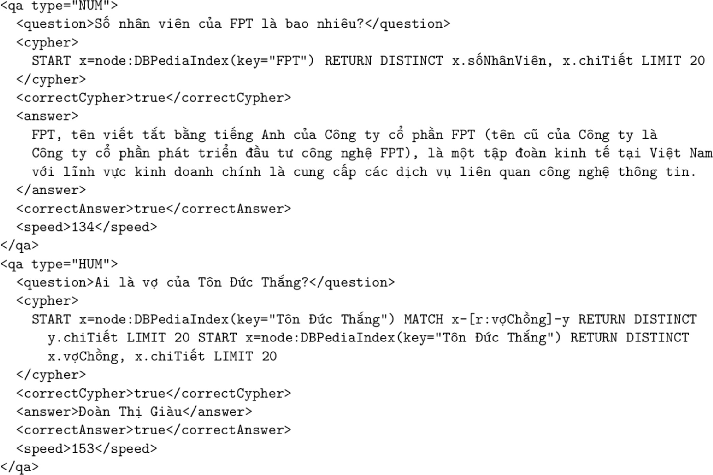

DOI: https://doi.org/10.1145/3184558.3191535
WWW '18: Proceedings of The Web Conference 2018, Lyon, France, April 2018
In this paper, we describe the development of an end-to-end factoid question answering system for the Vietnamese language. This system combines both statistical models and ontology-based methods in a chain of processing modules to provide high-quality mappings from natural language text to entities. We present the challenges in the development of such an intelligent user interface for an isolating language like Vietnamese and show that techniques developed for inflectional languages cannot be applied “as is”. Our question answering system can answer a wide range of general knowledge questions with promising accuracy on a test set.
ACM Reference Format:
Phuong Le-Hong and Duc-Thien Bui. 2018. A Factoid Question Answering System for Vietnamese. In WWW '18 Companion: The 2018 Web Conference Companion, April 23–27, 2018, Lyon, France. ACM, New York, NY, USA 7 Pages. https://doi.org/10.1145/3184558.3191535
Question Answering (QA) has been an important line of research in natural language processing in general and human-machine interface in particular. The ultimate goal of a QA system is to provide a concise and exact answer to a question asked in a natural language. For example, the answer to the question “Which French city has the largest population?” should be “Paris”.
Open-domain QA is a challenging task because the research and validation of a precise answer to a question require a good understanding of the question itself and of the text containing the potential answer. Typically we need to carry out both syntactic and semantic analyses in order to fully understand a question and pinpoint an answer. This is much more difficult than the task of common information retrieval, where one only needs to present a ranked list of documents in response to a question, which can be efficiently performed by available search engines.
The state-of-the-art techniques in open-domain QA can be classified into two main categories, namely semantic parsing based techniques and information retrieval based techniques [2]. Semantic parsing systems try to interpret the meaning of a question correctly by semantic analysis. A correct interpretation converts the question into an exact database query that returns a correct answer. On the other hand, information retrieval based systems first transform a question into a valid query, then retrieve a set of candidate answers by querying a corpus and/or a knowledge base, and finally use fine-grained heuristics to identify the exact answer.
Although both kinds of system require human expertise to hand-craft linguistic resources including lexicons, grammars and knowledge bases, the information retrieval based approach is more suitable to less-resourced languages since many advanced natural language processing tools such as syntactic and semantic parsers are not readily available. Furthermore, as shown in many previous studies on building QA systems, existing methods developed for well-studied languages are not easily and conveniently applied or scaled up to natural languages other than English.
In this paper we present a QA system for the Vietnamese language which combines both statistical models and knowledge-based methods in a chain of processing modules to provide high-quality mappings from natural language text to entities. We present the challenges in the development of such an intelligent user interface for an isolating language such as Vietnamese and show that techniques developed for inflectional languages cannot be applied “as is”. Our question answering system can answer a wide range of general knowledge questions with a promising accuracy on a test set. The system is released as open-source software in the hope that it will serve as a baseline for future developments of question answering systems for Vietnamese.
The remainder of this paper is structured as follows. First, the next section gives a survey of existing work in the line of this research. Next, we describe the methodology that we use to develop our QA system. Then, we present our experiments and evaluation results. Finally, the last section concludes the paper and suggests some directions for future work.
There have been some existing studies on building and evaluating QA system for Vietnamese. In this section, we present a survey of existing work, compare and hightlight the difference between them and this work.
Tran [21] discussed a specific QA system for Vietnamese person named entity which focuses on only “who”, “whom” and “whose” questions. To this end, the diversity of answerable questions are rather limited. A prior work of the same research group [22] presented an experimental study of a QA system for Vietnamese which utilized a search engine to search for answers. This system is restricted to travelling domain and was tested on only a small test set containing one hundred questions. Duong [5] presented a QA system for use in Vietnamese legal documents which is able to answer simple questions about procedures and sanctions in law on business. This system uses a similarity-based model and the Lucene document search engine to retrieve candiate documents and extract answers. Compared to these works, our QA system differs in three aspects. First, it is open domain which can provide answers to a much wider range of questions other than a specific domain or person named entity question types. Second, our system does not use a search engine to retrieve and rank documents but relies on a large knowledge base. And third, our system is evaluated on a test set of about ten times larger which covers a wide variety of questions, resulting in a promising accuracy.
Most recently, Nguyen [17] presented a QA system for Vietnamese which uses semantic web information to provide answers to user's queries. Together with a series of previous publications in the same line of research, this group developed the KbQAS system which is claimed to be the first knowledge-based QA system for the language.1 A key component of their system is a knowledge acquisition module which utilizes the single classification ripple down rules method for question analysis. This is a typical rule-based system. Although their method is able to acquire rules in a consistent and systematic manner, the knowledge bases are required to be built from scratch and an adaptation to a new domain or language still requires time and effort of human expertise. As reported, this system contains 92 manual rules and was tested in a test set of 74 Vietnamese questions. In contrast to this work, our system utilizes both statistical and rule-based approaches, a large ontology base (DBPedia), and the Cypher query language – a high-performance declarative language for query graph database. Our system is also validated on a much larger test set of diverse questions, totaling nearly 900 question and answer pairs.
Our QA system uses an ontology developed by the DBPedia project [13].2 DBpedia is a crowd-sourced community effort to extract structured information from Wikipedia and make this information available on the Web for a wide number of languages, including Vietnamese. The DBPedia knowledge bases have become an important source of structured information on the emerging Web of Data [16].
DBPedia is an ontology according to the definition of W3C3 in that it defines the terms used to describe and represent an area of knowledge. Figure 1 shows an excerpt of the DBPedia ontology. This ontology says that there is a class called Writer which is a subclass of Artist which is in turn a subclass of Person. There is a property relating an instance of the class Work to an instance of the class Person. For example, the novel titled “Angel and Daemon” is an instance of class Work and related via property author to its author “Dan Brown”.
The DBPedia ontology can also be viewed as a property graph model made up of nodes, relationships and properties [20]. Nodes contain properties in the form of key-value pairs; the keys are strings and the values are arbitrary data types. Relationships connect and structure nodes. A relationship always has a direction, a label, a start node and an end node; the direction and label add semantic clarity to the structuring of nodes. It is noted that like nodes, relationships can also have properties which provide not only additional semantics but also metadata for graph algorithms and help constrain queries at runtime.
We have constructed a graph database from the dump files of the Vietnamese DBPedia ontology. The total size of these files is about 5 GB. The database is of size 1.5GB, consisting of one million nodes, 2.5 million links and 7.5 million properties.
We use Cypher to query the DBPedia ontology. Cypher is an expressive and compact graph database query language. This language is specific to Neo4j4 which is a good and well-known graph database used by many organizations in production applications. The major advantages of Cypher are that it is easy to learn, easy to use and ideal for describing graphs programmatically in a precise fashion.
It is noted that other graph databases have other means of querying data. Many graph databases support the RDF query language SPARQL. However, in building a QA system, we are interested in the expressive power of a property graph combined with an advantageous delarative query language. For this reason we chose Cypher to query the database to find data matching a specific pattern.
Cypher enables a user (or an application) to ask the database to find data that matches a specific pattern. Figure 2 shows an example of a simple pattern. This pattern describes three mutual friends.
Like most query languages, Cypher is composed of clauses. The simplest queries consist of a START clause followed by a MATCH and a RETURN clause. An example of a Cypher query that uses these three clauses to find the mutual friends of user named Michael is:
The other clauses that we can use in a Cypher query include WHERE, CREATE and CREATE UNIQUE, DELETE, SET, FOREACH, UNION and WITH. These clauses allow for expressive and efficient querying and updating of the graph database. For details please refer to the documentation page of the Cypher query language.5
In the following subsections we present briefly some important Vietnamese language processing modules which are integrated in our QA system. These modules deal with basic processing tasks of Vietnamese including word segmentation, part-of-speech tagging and question classification. Due to space restriction, we do not present in this paper the general characteristics of the Vietnamese language which are discussed in detail in [10].
Word segmentation or tokenization is the problem of dividing a string of written language into its component words. In English and many occidental languages, the space is a good approximation of a word delimiter. However, many languages do not have a trivial word segmentation process. For example, in Chinese or Japanese, sentences but not words are delimited; in Thai and Lao, phrases and sentences but not words are delimited, and as presented in the previous section, in Vietnamese syllables but not words are delimited. Word segmentation is in fact a difficult problem for these languages.
In particular, there are two types of ambiguities that we must deal with in Vietnamese word segmentation. The first ambiguity is called overlap ambiguity where some adjacent syllables can have different word segmentations and their validity cannot be determined completely without resorting to a syntactic or semantic resolution of the entire sentence. For example, the three-syllable phrase “thuc địa bàn” can have two word segmentations, either “(thuc địa) (bàn)” or “(thuc) (địa bàn)”, depending on context. A more complicated example is with a four-syllable phrase “t hp m tit” where all the words t hp, hp m, and m tit are valid, and hence all possibly different overlapping word segmentations are plausible. The second ambiguity is called the combination ambiguity where two adjacent syllables can either be divided or combined to make words. For example, two syllables “chanh chua” can form an adjective which means to have a sharp tongue, or they can form two words chanh and chua, a noun phrase which means a sour lemon.
Although Vietnamese word segmentation is difficult, there exists efficient approaches to solve this problem which have been published by the Vietnamese language processing community. In this work we adopt the approach of [9] which is consistent and has a good accuracy in the range of 96%–98% on different test sets.
Part-of-speech (POS) tagging, also called grammatical tagging or word-category disambiguation, is the problem of automatically determining each word in a sentence as corresponding to a particular part-of-speech such as noun, verb, adjective, adverb, etc. POS tagging is not an easy problem since many words can represent more than one part of speech on different occasions.
For well-studied languages like English or certain other occidental languages, POS tagging is a solved problem with very high accuracy, about 97.3%, which is believed to be as high as human performance [15]. However the accuracy of Vietnamese POS tagging is much lower than that of English. The combination of the best machine learning algorithms and the best features in discriminative sequence models has achieved an accuracy of about 93.5% [11]. As presented in the previous section, an important reason for the inferior accuracy of Vietnamese POS tagging is its inherent difficulty. It is not easy to determine a clear syntactic function of many Vietnamese words while syntactic category mutation is a frequent phenomenon. Furthermore, POS tagging depends heavily on word segmentation, which is a difficult task as presented in the previous section.
The first step of understanding a question is to perform question analysis. Question classification is an important task of question analysis which detects the answer type of the question. Question classification helps not only to filter out a wide range of candidate answers but also to determine answer selection strategies. For example, if one knows that the answer type is city, one can restrict candidate answers as cities instead of consider every noun phrase of a document providing the answer.
At first glance, one may think that question classification can be framed as a text classification task. However, there exists characteristics of question classification that distinguish it from the common task. Firstly, a question is relatively short and contains less word-based information than an entire text. Secondly, a short question needs deeper analysis to reveal its hidden semantics. Therefore application of text classification algorithms per se to question classification cannot produce good results. Furthermore natural languages are inherently ambiguous, thus the question classification is not trivial, especially for what and which type questions. For example “What is the capital of France?” is of location (city) type, while “What is the Internet of things?” is of definition type. Consider also these examples: (1) What tourist attractions are there in Reims? (2) What do most tourists visit in Reims? (3) What are the names of the tourist attractions in Reims? (4) What attracts tourists to Reims? (5) What is worth seeing in Reims? [14]; all these questions are of the same answer type: location. Different wording and syntactic structures classification difficult [6].
With the increasing popularity of statistical approaches to natural language processing in general and to question classification in particular, recent years have seen many machine learning approaches which have been applied to the problem of question classification. The main advantage of machine learning approaches is that one can learn a statistical model using useful features extracted from a sufficiently large set of labeled questions and then use it to automatically classify new questions.
We use the method proposed by [12] in our question classification module. In contrast to many existing approaches for question classification which make use of very rich feature spaces or hand-crafted rules, this method proposes a compact yet effective feature set. In particular it uses typed dependencies as semantic features. It has been shown that by integrating only two simple dependencies of types nominal subject and prepositional object, one can improve the accuracy of question classification by over 8.0% using common statistical classifiers over two benchmark datasets, the UIUC dataset for English and a recently introduced FPT question dataset for Vietnamese. With unigram feature and typed dependency feature, one can obtain accuracy of 87.6% and 80.5% using maximum entropy classification for the UIUC and FPT question dataset respectively. It is worth noting that the best question classification accuracy on the UIUC dataset is 89.00% by [6], where important features like head words and their hypernyms are included. Such semantic features are not readily available for less-resourced languages such as Vietnamese, where a WordNet is still in its first stage of construction.
An important module of our knowledge-based QA system is the module that transforms textual questions in Vietnamese into equivalent Cypher queries. The queries are then executed to search for answers to the questions. This section describes the main processing steps of this module.
First, a textual question is processed by the NLP chain presented above, ranging from word segmentation to part-of-speech tagging and question classification. For example a question such as “Thành vin chủ cht của tp đoàn FPT là nhng ai?” (“Who are the most important people of FPT Corporation?”) will be analysed as follows:
| Question Type | Example | English Translation |
| E là [ai | gì | đu | ...]? | Nguyn Tn Dũng là ai? | Who is Nguyen Tan Dung? |
| Facebook là gì? | What is Facebook? | |
| p của E [nh th nào | bng bao nhiu | ...]? | Dn s của Hà Ni bng bao nhiu? | What is the population of Hanoi? |
| r của E là gì? | Thủ đ của Thái Lan là gì? | What is the capital of Thailand? |
| r của E [nh th nào | bng bao nhiu | ...]? | V của thủ tng Nguyn Tn Dũng là ai? | Who is the wife of Prime Minister Nguyen Tan Dung? |
| Chủ tịch HĐQT tp đoàn FPT là ai? | Who is the chairman of FPT Corp.? | |
| p của r của E là gì? | Tn của v vua Trn Thái Tng là gì? | What is the name of King Tran Thai Tong's wife? |
| Ni sinh của chủ tịch UBND TP. Hà Ni đu? | What is the place of birth of the chairman of Hanoi People's Committee? | |
| E 1 và E 2 có r là gì? | Vit Nam và Thái Lan có thủ đ là gì? | What are the capitals of Vietnam and Thailand? |
As another complete example, consider the following question: “Dn s và din tích của Hà Ni là bao nhiu?” (What is the population and area of Hanoi?). This question is analysed by the processing chain above, where the intermediate results and the final Cypher query are as follows:
In the next section, we present experimental results of our QA system and discussion.
Our aim is to build a QA system which is able to answer Vietnamese factoid questions on a broad range of topics from the DBPedia ontology with high accuracy. We have developed an algorithm to transform different questions to corresponding Cypher queries following the methodology described above. The system can answer a wide variety of questions of diverse types, which are shown in the Table 1.
In this table E, p and r represents an entity, a property and a relationship respectively, and the vertical character ’|’ is used to represent alternative choices. The last row of the table shows a complicated question type where we seek the same relationship of two different entities (here, the capital). It is also extended further to account for more complicated questions where a user wants to seek for some comparative information, such as in the following example question where the area and population of two different Vietnamese provinces are queried:
“Din tích và dn s của Hà Ni và Thái Bình bng bao nhiu?” (What are the area and population of Hanoi and Thaibinh?)
It is worth noting that the system can effectively deal with different variants of the same question since different syntactically correct word orders are identified and analysed. For example, to query the population of Hanoi, one can use either of the two following paraphrases:
| Dn s của Hà Ni là bao nhiu? |
| Hà Ni có dn s bng bao nhiu? |
| (What is the population of Hanoi?) |
Or to ask for the country whose capital is Bangkok, a Vietnamese speaker can use either of the two following choices:
| Bangkok là thủ đ của nc nào? |
| Nc nào có thủ đ là Bangkok? |
| (What country's capital is Bangkok?) |
To evaluate the performance of the system, we have manually built a dataset of 879 question-answer pairs about person, location and other facts where the answers can be found in the Vietnamese Wikipedia.6 To understand the performance further, in addition to the accuracy of the final answer, the accuracy of query transformation is also evaluated. The accuracy of our system is shown in Table 2.
| Accuracy of the QA system | 76.90% |
| Accuracy of the query construction module | 97.50% |
The system is able to give correct answers for 76.70% of the questions in the test set. If the system does not find an answer to a question, it is counted as an incorrect result for that question.
The current test set contains the following types of questions of different difficulty levels:
Table 1 gives some more examples of these types of questions along with their English translation.
Our manual test set also contains the correct Cypher query for each question so that the automatic query construction module can also be evaluated. Table 3 shows two samples in our test set.
|  |
Our QA system is designed to provide a short answer to factoid questions. However by querying the DBPedia graph database built on top of the Wikipedia it can also answer many questions in great details in the sense that it can also show the answer text for the question whenever it is available. For example, the following snippet shows the answer to the question “Tác giả của Truyn Kiu là ai?” (Who is the author of The Tale of Kieu?). Once the system finds the short answer “Nguyn Du” for this question, it can retrieve and show the summary of the corresponding entry in the Wikipedia, giving the following result:
Our QA system has a good speed in that it can answer a question in average 0.04 second on a personal computer. Our system will be released as an open-source project and freely available for research purpose. We believe that our system will be useful for the Vietnamese language processing community. At the moment, our demo system is available for testing at http://124.158.5.68:8080/wiki-qa/.
This paper presented the development of an open-domain question answering system for the Vietnamese language. The system combines both statistical models and ontology-based methods in a chain of processing modules to provide high-quality mappings from natural language text to entities. It can answer a wide range of general knowledge questions with promising accuracy on a test set. It is released as an open-source software project in the hope that it will serve as a baseline for future development of question answer systems for Vietnamese.7.
With the rise of available large scale structured knowledge bases, we think that the most promising approach to open-domain question answering is the ability to query efficiently such databases in natural languages. In this work we concentrated on exploiting DBPedia, a freely available database of facts which are extracted from the Wikipedia. Nevertheless there exists other good knowledge bases such as Freebase [1], an open shared database of the world's knowledge, which has been shown to be very useful for many applications including question answering. We plan to investigate how we can use the Vietnamese section of this knowledge base in our system in a future work. We also plan to perform some comparisons with other approaches that can find answers directly from Wikipedia texts to show the benefit of quering an ontology.
Current good question answering systems make use of additional natural language processing modules such as dependency parsing or semantic role labelling [4]. We would like to improve further the performance of our system by integrating recently available dependency parser [8], semantic role labeller [18] and named entity recognizer for Vietnamese [7].
Finally recent works on open-domain question answering [2, 3] have shown the efficiency of embedding models, which learn low dimensional vector representations of words and knowledge bases constituents to achieve better accuracy. How these models can be used to improve our current system is another interesting line of research that we would like to research in a future work, following some recent results [19].
This research is partly funded by FPT Technology Innovation, FPT Corporation. The first author is partly funded by the Vietnam National University, Hanoi (VNU) under project number QG.15.04. We are grateful to our anonymous reviewers for their helpful comments which helped us improve the quality of the article.
1In their work, the term “knowledge base” may lead to confusion in that it really refers to a set of rules rather than an ontology base of entities and relations.
3http://www.w3.org/standards/semanticweb/
5http://neo4j.com/docs/stable/cypher-query-lang.html
6Currently, the Vietnamese Wikipedia contains about 1,140,000 articles according to https://stats.wikimedia.org/EN/.
7The temporary demo link of our system is at http://124.158.5.68:8080/wiki-qa/
This paper is published under the Creative Commons Attribution 4.0 International (CC-BY 4.0) license. Authors reserve their rights to disseminate the work on their personal and corporate Web sites with the appropriate attribution.
WWW '18, April 23-27, 2018, Lyon, France
© 2018; IW3C2 (International World Wide Web Conference Committee), published under Creative Commons CC-BY 4.0 License. ACM ISBN 978-1-4503-5640-4/18/04.
DOI: https://doi.org/10.1145/3184558.3191535